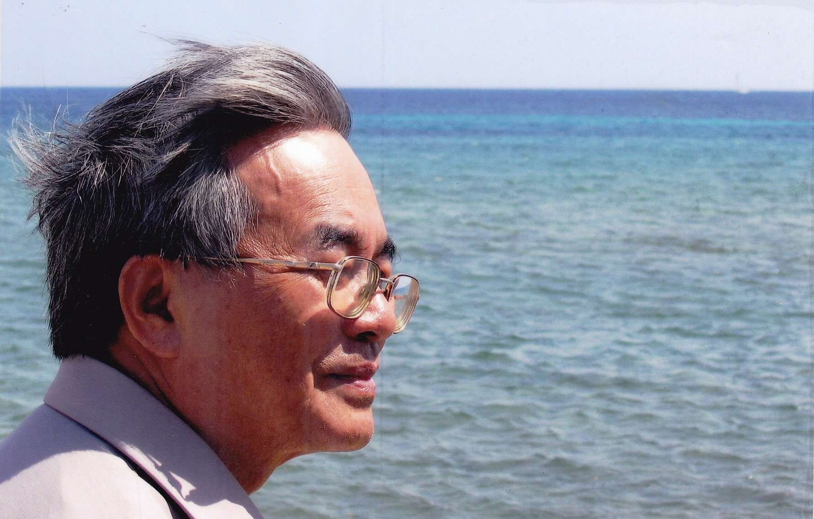
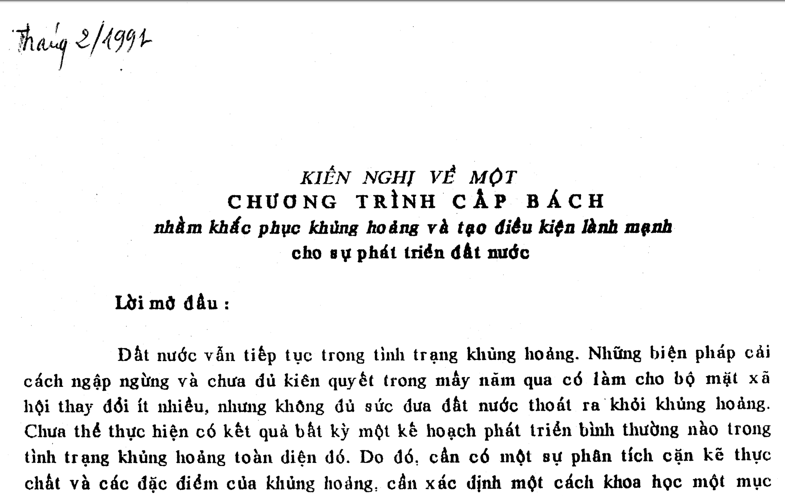

A Voice for Reform
Phan Đình Diệu was a scientist who helped found computer science in Vietnam, and a principal architect of the early national programs that brought information technology to the country. He was also a citizen who cared deeply for his homeland - one who offered his most heartfelt and candid thoughts in the hope of seeing it grow more prosperous, and more democratic.

The Citizen
For four decades he offered his country candid counsel - in speeches to the National Assembly, in his 1991 proposal for reform, in his reading of the 1992 Constitution. He simply said what he believed to be true. The BBC, TIME and the Far Eastern Economic Review took note.
Read more
The Scientist
Constructive mathematics and logic in Moscow; automata, algorithms and cryptography; and a patient effort to give Vietnam a computer science - and a place online - of its own.
Read more
Remembered
Recollections from friends, students and colleagues - among them Fields Medalist Ngô Bảo Châu - on the man behind the ideas.
Read moreThis English edition is a curated introduction for international readers. The complete archive - papers, speeches, films and photographs - is available on the Vietnamese site.